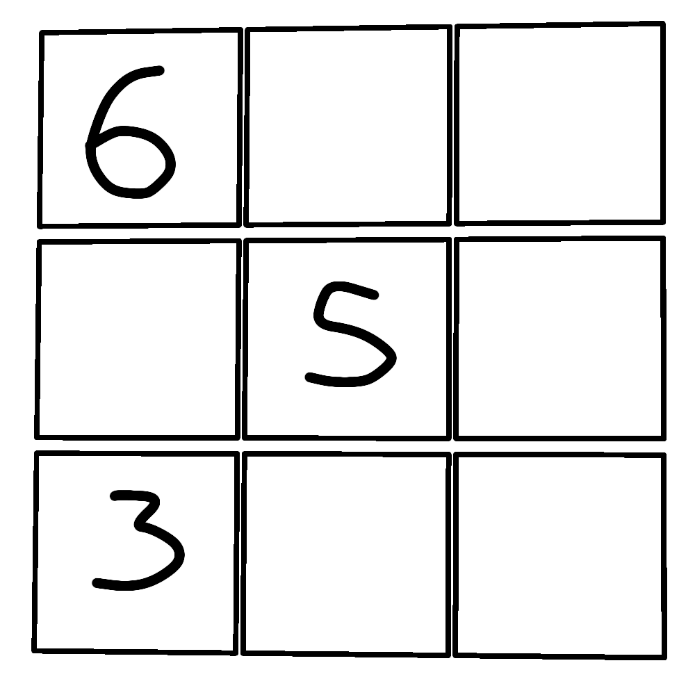

In implementing the sudoku solver the visualization of cell and board plays an important role.
Our objective is to not just create an algorithm that solves give sudoku board,but to breathe life into the process through an intuitive and user friendly visualizatin .It helps understanding how the backtracking algorithm works
Each cell instance has position while contains row-column grid coordinates and has a value property while can has any number from 0 to 9 where 0 represents empty cell.
Board instance contains 9x9 2d array of cells.It is initialized with empty cells which then can befilled by user or solver.
grid = [
[Cell( 0,0,6 ) , Cell(1,0,0) , Cell(2,0,0 )],
[Cell( 0,1,0 ) , Cell(1,1,5) , Cell(2,1,0 )],
[Cell( 0,2,3 ) , Cell(1,2,0) , Cell(2,2,0 )]
]

3x3 grid is show for simplicity
This algorithm run while there are empty cells in the grid.It fills the valid_values in that empty cell,if no values are found it backtracks
Backtrack function is called when there are no valid_values left for the current cell.It undo previous choices to explore other possibilities
def backtrack(self, curr):
if not self.closedset:
print("no solution")
return
curr.tracked = []
prev = self.closedset.pop()
prev.value = 0
It loops through the adjacent rows of current cell and removes duplicate value from result
def valid_rows(self, cell, result):
x = cell.x
y = cell.y
for i in range(9):
if x == i:
continue
other = self.cells[y][i]
if other.value in result:
result.remove(other.value)
It loops through the adjacent column of current cell and removes duplicate value from result
def valid_cols(self, cell, result):
x = cell.x
y = cell.y
for j in range(9):
if y == j:
continue
other = self.cells[j][x]
if other.value in result:
result.remove(other.value)
It loops through the sub grid of current cell and removes duplicate value from result
def valid_subgrid(self, cell, result):
x = cell.x
y = cell.y
startRow = x - x % 3
startCol = y - y % 3
for j in range(startCol, startCol + 3):
for i in range(startRow, startRow + 3):
if x == i and y == j:
continue
other = self.cells[j][i]
if other.value in result:
result.remove(other.value)
It removes duplicate values from result that are present in tracked property of current cell
result = []
for i in range(1, 10):
if i not in curr.tracked:
result.append(i)